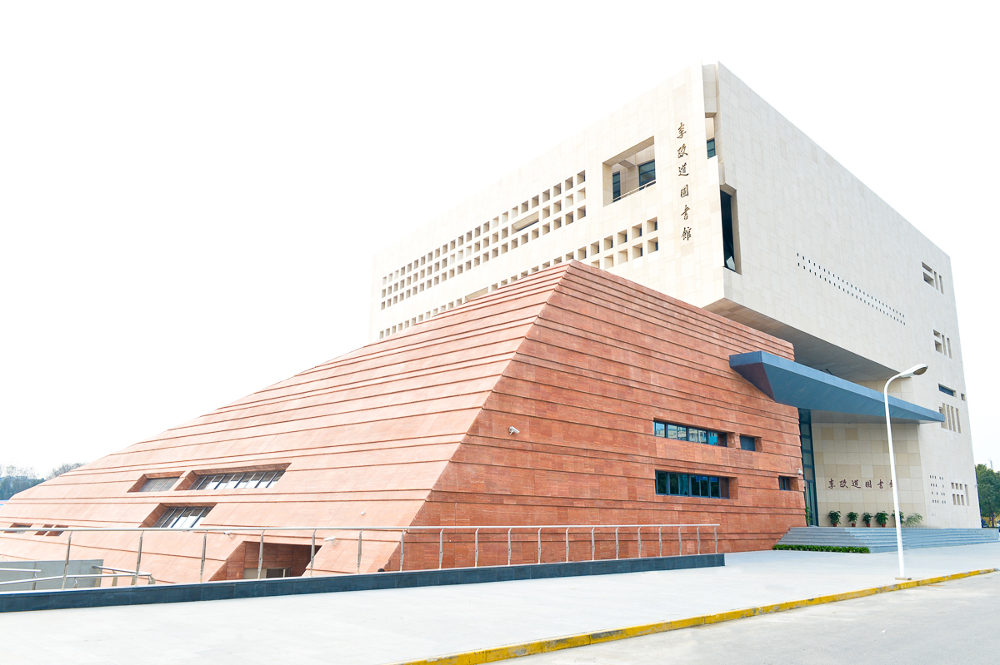

|  |
The international conference GAMA (Galaxy Angular Momentum Alignment)
will focus on the alignment of angular momentum of dark matter halos, and galaxies with large scale structure.
Recent and upcoming surveys will provide a rich testing ground, which this meeting will
discuss, review, and forecast.
The spin field in principle contains comparable amount of cosmic information as the density field and brings
independent ways in understanding the gravitational dynamics
of large scale structure (potentially dark energy and neutrino mass).
This conference brings together theory, data, and facilities, reviewing recent
progress, and providing an open forum for future work.
Significant time will be allocated to topical discussions.
It is recommended that participants
register early in order for LOC to provide timely assistance (e.g. invitation letter for visa) if needed.
If you have any questions, please contact
Haoran Yu (haoran_at_cita.utoronto.ca)
NEW Official website of GAMA-2019 at Tsung-Dao Lee Institute, SJTU
|